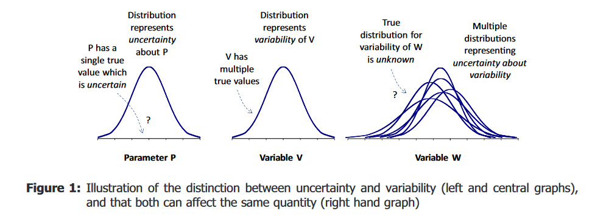

Probability distribution
The interpretation of probability
Before we go into a probability distribution. Let us revisit what is a probability.
When you work with scientific assessment, you will encounter the two dominating ways to interpret a probability (SO 5.10.). The first is to interpret probability as “the frequency with which sampled values arise within a specified range or for a specified category”. An example of this interpretation is the average proportion of times you would get heads up when flipping a coin many times. This is also known as the frequency interpretation.
The second interpretation is to interpret probability as “a quantification of a judgement on the likelihood of a particular range or category”. An example of this interpretation is your uncertainty about getting a head up the next time you flip the coin. This is known as the subjective (or personal) probability interpretation.
The subjective (or personal) probability interpretation is used by EFSA to quantify the experts’ uncertainty.
Note, that the mathematical theory for probability is the same for both interpretations.
The interpretation of probability matters when specifying models for scientific assessment and in particular when communicating conclusions.
EFSA’s guidances uses subjective probability as the preferred measure for expressing uncertainty, because it can quantify the relative likelihood of alternative outcomes taking account of all sources of uncertainty, which is what decision-makers need to know.
Probability distribution
So far, we have been talking about probability for a binary event, which is an event having only two outcomes. This is the simplest probability model and it can be applied to express uncertainty about a yes/no question.
Probability is also used for quantities having “more than two possible values”.
This can be quantities that are categorical - with distinct classes that do not have to come in a particular order Alternatively, a quantity can be discrete - taking numerical integer values, usually obtained by counts A quantity can also be continuous - taking numerical continuous values for which probability is expressed over ranges instead of specific numbers
The probabilities for quantities taking different values are summarised by a probability distribution.
The probabilities in a probability distribution can be assigned a frequency or subjective probability interpretation.
When used to quantify uncertainty, a subjective probability distribution quantifies the experts’ uncertainty regarding a quantity that has a single true value. Let me give you an example. It can be the number of steps in the staircase outside my room. The number is fixed, but I have not counted them recently, so I am uncertain about it.
Probability distributions are useful for characterising uncertainty about non-variable quantities, for which there is a single true value, such as parameters within scientific models.
A quantity can alternatively be a variable. The supporting opinion of the uncertainty analysis guidance defines a variable as “a quantity that has multiple true values”. This could for example be body weight measured in different individuals in a population, or in the same individual at different points in time.
Probability distributions can also be used to model variable quantities in probabilistic models of variability.
A scientific assessment can consist of probabilistic models for both uncertainty and variability.
Uncertainty and variability
I think we are ready to say something about the distinction between uncertainty and variability.
Uncertainty refers to the state of knowledge, whereas variability refers to actual variation or heterogeneity in the real world. Both uncertainty and variability can be represented by probability distributions, as illustrated in the left and central graphs in Figure 1.
The left you see a probability distribution for a non-variable quantity - Let us call it parameter P. It is a single true value which is uncertain, and the distribution represents uncertainty about P.
In the center, you see a probability distribution for a variable quantity. This variable V has multiple true values. The probability distribution represents variability of V.
To the right you see a probabilistic model for both variability and uncertainty. We use a probability distribution to represent variability in this variable, but the true distribution for variability is unknown and we use probability distributions to represent our uncertainty about it’s variability.
Uncertainty may be altered (either reduced or increased) by further research, because it results from limitations in knowledge.
Variability cannot be altered by obtaining more knowledge, because it refers to real differences in the world or how the assessors choose to model the world.
It is important that assessors distinguish uncertainty and variability because they have different implications for decision-making: informing decisions about whether to invest resources in research aimed at reducing uncertainty or in management options aimed at influencing variability (e.g. to change exposures to subgroups of the population).
Communicating uncertainty about a quantity of interest by a probability distribution
A graph showing probabilities for different values of an uncertain quantity that has a single true value (e.g. the average exposure for a population). The graph (Figure 2) can be plotted in various formats, most commonly a probability density function (PDF), cumulative distribution function (CDF) or complementary cumulative distribution function (CCDF) (see Section 4.1.4.2 in UC)
Common terminology for a probability distribution
A probability distribution for a discrete or continuous quantity gives the probability that the quantity lies in any specified range of values.
A probability distribution can be represented by its Cumulative Distribution Function (often abbreviated as CDF). The CDF gives the probability that the quantity ls less than or equal to any specified value (Figure 2).
The CDF contains all the information about probabilities for the quantity: for example, it can be used to calculate the probability that the quantity lies in any specified range of values.
This is a curve over the possible range of the quantity (on the x-axis) increasing from 0 to 100% probability (on the y-axis).
To summarise uncertainty, an assessor might want to find values that divide the range of the quantity into parts containing specified amounts of probability. Such values are known as quantiles (or percentiles).
The guidance denotes quantiles with the letter P, together with the associated probability that the quantity would take a value below the quantile. For example, the value that divides a probability distribution into two parts with equal probabilities is the P50 quantile.
This value is also known as the median.
Most continuous quantities have a Probability Density Function.
The Probability Density Function express probabilities as area under its curve. The total area under the curve is 1, corresponding to 100% probability.
The area under the PDF curve to the left of the median is 50%.
The Probability Density Function can be thought of as a smooth histogram for a continuous quantity. Note that when used for a probability distribution, the area for the histogram should be 1.
Guidance on communicating a probability distribution
The communication guidance offers specific recommendations on how to communicate a probability distribution representing uncertainty.
Always state clearly what the probability distribution refers to.
Graphical representations of distributions are difficult to interpret for non-technical audiences. Therefore, for entry and informed levels, only communicate selected results extracted from the distribution. Provide the central estimate (mean or median), the P5–P95 range (within which it is 90% certain that the true value lies) and/or the P25–P75 range (within which it is 50% certain the true value lies) If the assessors have provided different quantiles (e.g. P1–P99), use these instead. If it is critical for understanding the message, also give an idea about the form of the distribution behind the range.
In addition, or alternatively: if a regulatory (reference) value exists, or a value of particular interest for other reasons (e.g. more than zero occurrence of an adverse outcome), provide the probability of exceeding that value.
For an informed audience, it is recommended to in addition provide information on how the probability distributions have been derived, underlying data or evidence and methods, and use boxplots to visualise the summaries from the distribution. Add labels and explanatory text.
When using a box plot, explain clearly that it represents uncertainty and not variability.
More information should be provided for a technical audience: The assessors should include a table of the distribution (including P5, P25, P50, P75 and P95 ranges) and a box plot. In addition, if there are values of specific interest to the public/risk managers (e.g. a reference dose/value), then provide the probability for the true value being above or below this. State which sources of uncertainty are considered in the distribution and provide a qualitative or quantitative description of uncertainties not considered in the distribution State clearly how each distribution was obtained, and in particular whether it was derived by statistical analysis, mechanistic modelling, expert judgement or a combination of these.
If quantiles of the distribution are not enough to communicate something important about the distribution, the assessors can also provide a PDF graph of the distribution.
They should accompany the PDF with a CDF graph of the distribution if this is useful for technical readers of the assessment.
Use the same horizontal scale, and plot (as shown here to the left) the CDF above the PDF and clearly mark the location of the central estimate.
Explain clearly that the distribution represents uncertainty about the quantity of interest, for which there is a single true value, as distributions are more commonly used to represent variability and people may misinterpret them in that way.
Note that there is specific guidance on how to communicate a distribution that quantifies both variability and uncertainty for the same quantity. The term for this is a “2-dimensional probability distribution’.
Additional guidance when communicating uncertainty with numbers
General guidance is provided for communicating uncertainty with numbers.
An example of general guidance is about communicating uncertainty about proportions or frequencies: Avoid using percentages for the outcome of interest (e.g. a proportion of something, or the incidence or risk of an outcome or effect), to avoid confusion with percentages quantifying uncertainty. Where possible, use frequencies (e.g. 1 in 20) to express incidence. Example: ‘The Panel was 90% certain that at most 3 in 10,000 sheep would be affected by the virus.’
Another example of general guidance is about framing:
At the entry level, frame the message positively as % certainty for the outcome, conclusion or range of values that EFSA considers more likely.
This is important because expressing, e.g., 5% probability as 5% certainty is misleading, since there is then a 95% probability that the outcome will not occur. This is better expressed as 95% certainty of non-occurrence.
At the informed level, repeat the certainty statement from the entry level and explain clearly the main reasons why the outcome might occur. Then, give the main reasons why the outcome might not occur.
More tips and recommendations are provided in the guidance of communication of uncertainty.